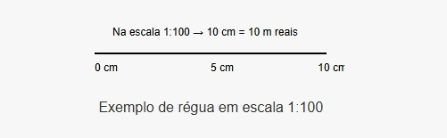
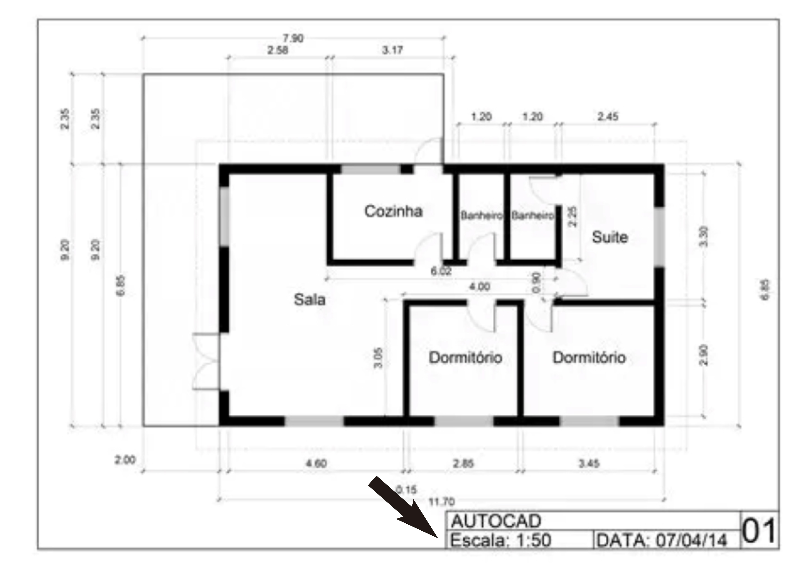
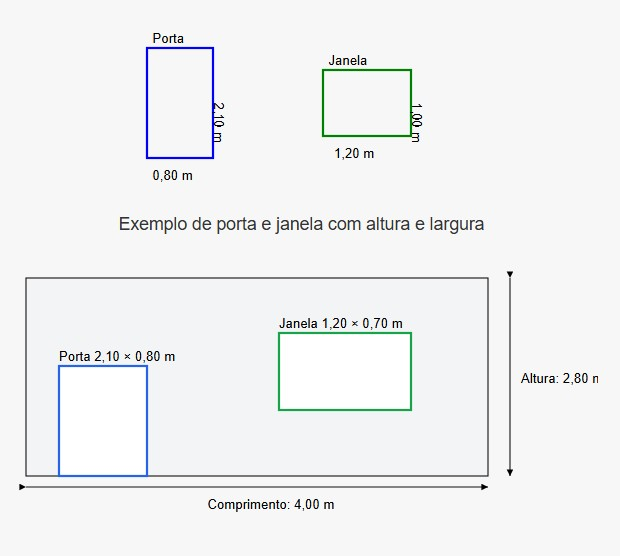
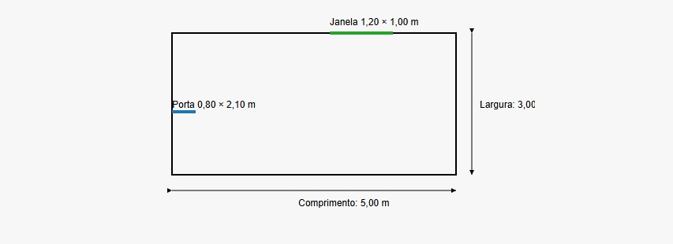
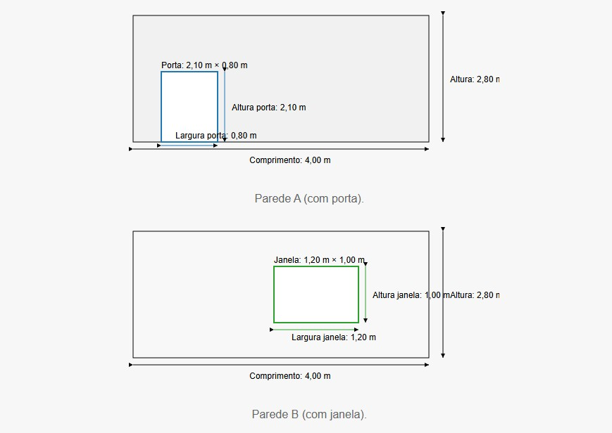

Publicado em:
Como fazer um orçamento de obra sem ser um profissional

Você não é engenheiro, pedreiro nem arquiteto — mas está querendo reformar ou construir algo e quer saber quanto vai custar? A boa notícia é que sim, você pode fazer um orçamento básico, com bastante precisão, mesmo sem formação técnica. Basta ter atenção, usar as ferramentas certas e seguir algumas dicas.
Comece pelas medidas
A base de qualquer orçamento é saber as dimensões da obra. Isso significa medir corretamente os espaços, portas e janelas.
Como tirar medidas de uma planta para fazer o orçamento
Se você tem em mãos a planta baixa de uma casa ou cômodo e quer saber as medidas reais para calcular materiais e custos, primeiro:
1. Entenda a escala da planta
A escala mostra a proporção entre o desenho e a medida real. O mais comum é:
- 1:100 → 1 cm no papel = 1 metro real
- 1:50 → 1 cm no papel = 0,5 metro (50 cm)
Normalmente a escala está escrita no canto inferior da planta. Exemplo: “Esc: 1:100”.
2. Use uma régua comum (se não tiver escalímetro)
- Escolha uma parede do desenho e meça com a régua (ex: 3,2 cm)
- Verifique a escala. Se for 1:100, isso significa que a parede tem 3,2 metros na realidade
Fórmula: medida no papel (em cm) × fator da escala
- Para 1:100 → multiplicar por 1
- Para 1:50 → multiplicar por 0,5
3. Verifique se a planta já traz as cotas (medidas)
Muitas plantas já trazem medidas ao lado das paredes. Isso facilita: você pode copiar diretamente sem medir nada.
4. Meça janelas e portas também
Esses elementos influenciam no cálculo de blocos, reboco, pintura e muito mais.
Como tirar medidas de um cômodo para reforma
Vai reformar a cozinha, o quarto ou o banheiro e não sabe por onde começar? Aprender a medir corretamente o espaço é o primeiro passo para calcular quanto material você vai precisar.
O que você precisa
- Fita métrica ou trena
- Papel e caneta
- Calculadora ou celular
Passo a passo
- 1. Meça a largura e comprimento do cômodo
- 2. Multiplique para saber a área (ex: 3m x 4m = 12 m²)
- 3. Meça a altura se precisar calcular paredes (pintura, revestimento ou blocos)
- 4. Subtraia as áreas de portas e janelas, se necessário
Planta baixa ilustrativa
Exemplos de paredes com medidas
Cálculo prático
Uma parede de 2,5m de altura por 4m de comprimento:
- 2,5 × 4 = 10 m²
- Agora subtraia portas e janelas: 10 m² – (porta 1,47 m² + janela 0,72 m²) = 7,81 m²
Calcule os materiais necessários
- Alvenaria: Divida a área das paredes pela área de um bloco
- Argamassa: Estime por m² de parede ou piso
- Reboco: Multiplique a área pela espessura (1,5 a 2 cm)
- Pintura: 1 litro cobre de 5 a 6 m² por demão
- Pisos/azulejos: Adicione 10% para perdas
Use nossa calculadora online para automatizar esses cálculos.
Consulte preços atualizados
- Visite lojas de materiais de construção ou pesquise online
- Anote o preço unitário de cada material
- Multiplique pela quantidade estimada
Estime a mão de obra
- Diária de trabalho
- m² de parede construída
- m² de pintura ou piso colocado
Use ferramentas simples e confiáveis
- Calculadora do celular
- Planilha do Excel
- Ou melhor: nossa calculadora de orçamento online